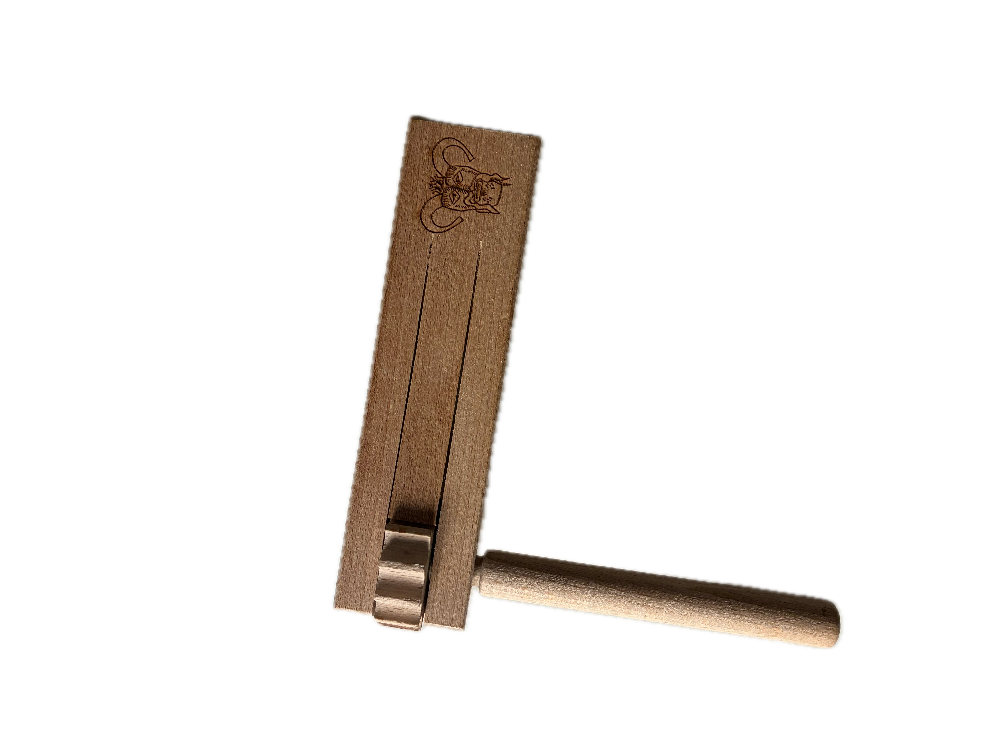

Post: Design Notes
I build each page as semantic HTML first, then layer CSS and interaction in small tested steps.
Short posts about art workflow, mapping, and front-end experiments.
Open each thumbnail to view the larger image.


I build each page as semantic HTML first, then layer CSS and interaction in small tested steps.